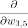
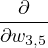
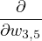
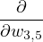
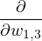

Deep learning is a family of machine learning techniques in which the hypotheses take the form of algebraic circuits with tunable connection strengths. Deep learning is currently the most widely used technique for applications such as visual object recognition, machine translation, speech recognition, etc. Networks trained by deep learning methods are often called neural networks. They are typically organized into layers.
A feedforward network has connections only in one direction. Each node computes a function of its inputs and passes the result to its successors. In neural networks, input values are typically continuous, and nodes take continuous inputs and produce continuous outputs. Some of the inputs are parameters of the network, and the network learns by adjusting these parameters.
Each node within a network is called a unit. Each unit calculates the weighted sum of its inputs, and applies a nonlinear activation function to produce its output.
We can write this in vector form if we add an extra dummy input a0 = 1, and a weight w0,j for that input.
A variety of different activation functions are used, such as
The logistic/sigmoid function: σ(x) = 1∕(1 + e-x)
The rectified linear unit (ReLU): ReLU(x) = max(0,x)
The softplus function: softplus(x) = log(1 + ex)
The tanh function: tanh(x) = (e2x - 1)∕(e2x + 1)
According to the universal approximation theorem, a network with just two layers can approximate any continuous function to an arbitrary degree of accuracy.
Combining multiple units together into a network creates a complex function that is a composition of algebraic expressions represented by individual units. A more general way to think about a network is as a computation graph or dataflow graph. For a two-layer network, the hypothesis can be represented as:
Where W(n) is the weight matrix and g(n) is the activation function of the nth layer, This expression corresponds to a computational graph which is fully connected. Choosing the connectivity of the network is also important in achieving effective learning.
We can apply gradient descent to learning the weights in computational graphs. We can calculate the gradient for the network using the chain rule.
For a weight, say w3,5 connected to an output unit, we can calculate the gradient with respect to it as
| Loss(hw) | = (y -ŷ)2 | ||
| = -2(y -ŷ)g5(in5) | |||
| = -2(y -ŷ)g5′(in5)(w0,5 + w3,5a3 + w4,5a4) | |||
| = -2(y -ŷ)g5′(in5)a3 |
For a weight connected to a hidden layer, say w1,3, we can calculate the gradient with respect to it as
 Loss(hw) Loss(hw) | = -2(y -ŷ)g′(in5)w3,5g3(in3) | ||
| = -2(y -ŷ)g′(in5)w3,5g3′(in3)x1 |
We can define Δ5 = 2(ŷ - y)g5′(in5) as a sort of ”perceived error” at the point where unit 5 represents its input, so that the gradient for w3,5 as Δ5a3. Similarly, we can define Δ3 = 2(ŷ - y)g5′(in5)w3,5g3′(in3) = Δ5w3,5g3′(in3), so that the gradient for w1,3 is Δ3a1. This phenomenon, where the error at the output is passed back through the network, is called back-propagation.
Gradient expressions have factors of the local derivatives gj′(inj), which are always nonnegative, but can be very close to zero. As a result, deep networks with many layers may suffer from a vanishing gradient, where error signals are extinguished as they are propagated back.
Gradients can be calculated through automatic differentiation. For example, backpropagation uses reverse-mode differentiation, where the chain rule is applied from the outside-in. This has encouraged an approach called end-to-end learning, in which a complex computational system can be composed from several trainable subsystems. The entire system is trained in an end-to-end fashion from input-output pairs.
The input and output nodes of a computational graph connect directly to the input data x and output ŷ. The encoding of factored data is usually straightforward. Categorical attributes with more than two values are usually encoded using one-hot encoding. An attribute with d possible values is represented by d separate input bits. This ensures that all the possible values of the attribute are equidistant.
On the output side, ideally the prediction ŷ would match the desired value y, and the loss would be zero. In practice, there is some error. It is common to interpret output values as probabilities and use negative log likelihood as the loss function. We look for the w* that minimizes sum of negative log probabilities of the N examples:
It is also common to talk about minimizing the cross-entropy loss, which is a measure of dissimilarity between two distributions P and Q.
We typically use this definition with P being the true distribution over training examples P*(x, y), and Q being the predictive hypothesis Pw(y|x). Minimizing the cross-entropy H(P*(x, y),Pw(y|x)) by adjusting w makes the hypothesis agree with the true distribution. Even though we don’t have the true distribution P*(x, y), we have access to some samples from it, so we can approximate it to some degree.
In multiclass classification problems, we need the network to output a categorical distribution - if there are d possible answers, we need d output nodes that represent probabilities summing to 1. To achieve this, we use a softmax layer. The softmax function is smooth and differentiable, and the exponentials accentuate differences in the inputs.
Many other output layers are possible. For example, a regression problem might use a linear output layer ŷj = inj without any activation function g, and interpret this as the mean of a Gaussian prediction with fixed variance. A mixture density layer represents the output using a mixture of Gaussian distributions, and thus predicts the relative frequency of each mixture component.
While processing an input vector x, the neural network performs several intermediate computations before producing the output y. We can think of the values computed at each layer as a different representation for the input x. Deep networks may form internal layers whose meaning is opaque to humans.
The hidden layers are typically less diverse than output layers. Internal nodes used sigmoid and tanh exclusively until around 2010, when ReLU and softplus became popular. Experimentation with increasingly deep networks suggest that better learning is obtained with deep and relatively narrow networks.